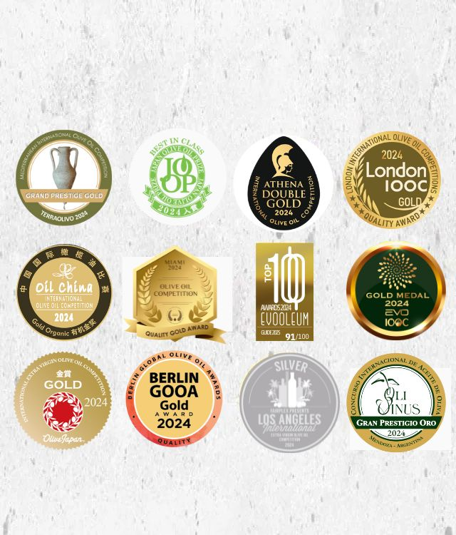
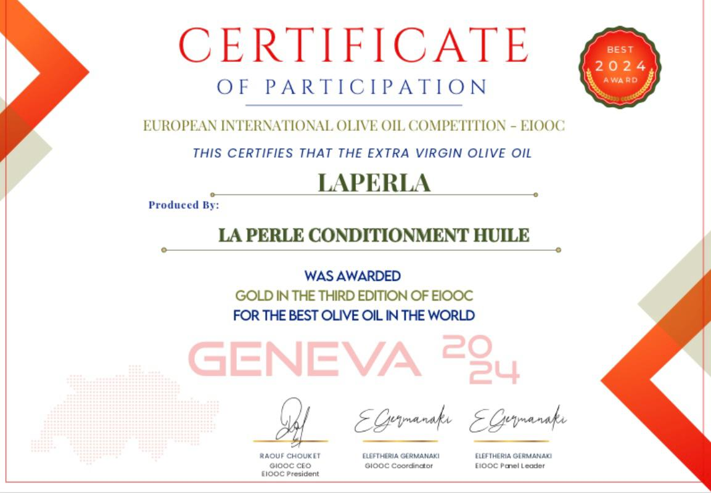
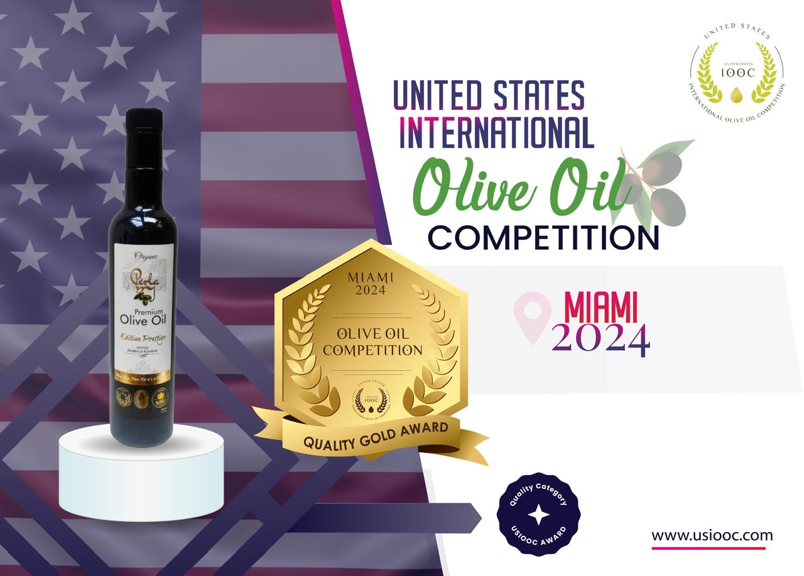
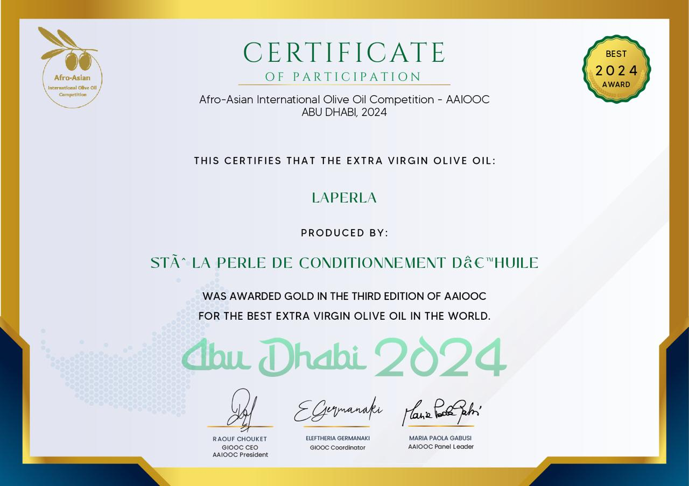
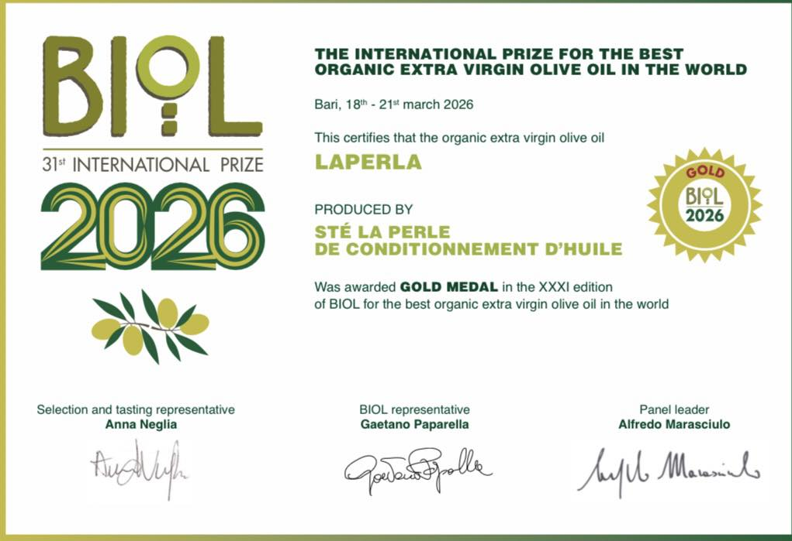

A Terroir Found Nowhere Else
Tunisia sits exactly where the Sahara meets the Mediterranean. Two native cultivars dominate its groves — Chemlali across the arid center and south, Chetoui across the wetter north — alongside a national germplasm collection of more than 200 registered varieties found almost nowhere else on Earth.
The same harshness that would kill less resilient crops works in the olive tree's favor. Heat and water stress trigger a defensive response in the fruit, concentrating the very phenolic compounds responsible for both an oil's health-protective power and its peppery bite. Researchers studying Chemlali trees in southern Tunisia have documented exactly this: arid, low-irrigation conditions correlate with a measurable rise in total phenolic content compared to irrigated groves.
Because irrigation is scarce and pest pressure is naturally low in this climate, most Tunisian groves are farmed with minimal chemical input as a matter of course. Read more about the ancient trees behind these groves in our feature on the Chemlali olive tree.
Registered Varieties
Tunisia's national germplasm collection, most found nowhere else on Earth.
Signature Cultivars
Chemlali (arid south, buttery) and Chetoui (northern hills, peppery).
Groves Farmed Organically
A share no other major olive-oil-producing nation comes close to matching.
What the Laboratory Confirms
Marketing claims are cheap. Peer-reviewed chemistry is not — and Tunisian olive oil has been the subject of a substantial body of it. A comparative study of sixteen Tunisian Chemlali and Chetoui oils, published in the Journal of Food Science, recorded total phenolic contents ranging from 94.4 to 1,010.8 mg/kg, figures that sit at or above the upper range typically reported for Spanish and Italian extra virgin oils.
Chetoui — Northern Hills
Rich in oleuropein, oleocanthal and elenolic acid — the compounds behind extra virgin's signature peppery "throat catch." Oleocanthal has been shown to carry ibuprofen-like anti-inflammatory activity (Beauchamp et al., Nature, 2005). The El Fahs area of Zaghouan recorded the highest antioxidant activity (DPPH/ABTS assays) of any Tunisian samples tested.
Chemlali — Arid Center & South
Carries high concentrations of tyrosol, hydroxytyrosol and pinoresinol, with oleuropein increasing as the fruit matures. These antioxidants are recognized by EFSA as protecting blood lipids from oxidative stress, and give Chemlali oil its characteristically smooth, buttery profile.
It Also Passes the Boring Tests
Beyond polyphenols, independent lab testing of Tunisian export-grade extra virgin consistently reports UV-absorption values (K232 under 2.50, K270 under 0.22) comfortably inside International Olive Council limits — the technical signature of a fresh, unrefined, properly extracted oil, not just a good-tasting one.
A Podium Regular on the World Stage
Independent competitions judged by trained international panels are the closest thing the olive oil world has to an objective scoreboard. Tunisia's recent results read like a country arriving, not a country trying:

NYIOOC World Olive Oil Competition: Tunisian producers earned 26 awards — 11 Gold and 15 Silver — a roughly 72% success rate among Tunisian entries, at the world's most prestigious and rigorously judged olive oil competition.
NYIOOC debut: Alya became the first Tunisian brand to compete, earning a Silver Award for an organic Chetoui monovarietal — and at the 4th International Olive and Olive Oil Quality Competition in Istanbul, 57 Tunisian producers were honored with 44 Gold, 2 Platinum, 10 Silver and 1 Bronze medal.
European International Olive Oil Competition: Tunisia won a historic 49 Gold Medals, outperforming numerous competing producer nations in a single edition.
The recognition extends beyond medal tables. At Olio Nuovo Days in Paris, an event where Michelin-starred chefs blind-taste new-harvest oils, chef Akrame Benallal was among those who selected a Tunisian Chetoui oil — evaluated purely on merit, with no label in sight.
Laperla: Every Number on the Label, Verified
We built Laperla on the same terroir described above — and we hold ourselves to the same standards that keep winning Tunisia its medals.

Geneva, 2024
Best Olive Oil in the World

Miami, 2024
Gold Medal, Quality Excellence

Abu Dhabi, 2024
Gold — Best Extra Virgin

Italy, 2026
Biol Prize, Organic Excellence
Free Acidity
Well under the 0.8% legal ceiling for extra virgin.
Harvest to Press
Cold-pressed within four hours to lock in freshness and polyphenols.
Polyphenols
Certified ECOCERT, Organic Bio, USDA Organic and FDA Approved.
The World's Organic Powerhouse
Tunisia is the world's largest producer and largest exporter of certified organic olive oil, accounting for roughly one-fifth of the planet's organic olive groves. Olive oil now represents more than 40% of Tunisia's total agricultural export revenue, and the 2025/26 harvest reached a record of roughly 500,000 tons — enough to move Tunisia past Italy into second place worldwide, behind only Spain, while capturing close to 28% of global export share.
What Tasters Are Saying
Trade reviews and consumer feedback on Tunisian extra virgin tend to circle back to the same few themes: a smoothness that doesn't sacrifice complexity, a shelf life that noticeably outlasts mass-market supermarket oils, and a price-to-quality ratio that reviewers frequently flag as outstanding value compared to equivalent-grade Italian or Spanish bottles.
The Bottom Line
Tunisian olive oil's rise isn't a marketing story — it's a terroir story, backed by chemistry, and increasingly confirmed on the world's most demanding competition floors. The same arid stress that shaped the Chemlali and Chetoui trees over centuries is now measurable in a lab report, and the same oil that once anonymously filled "Italian" bottles is now winning gold under its own name.
Sources
1. Olive Oil Times — "World Olive Oil Competition" coverage, 2024–2026 editions, including Tunisia's NYIOOC medal counts.
2. International Olive Council — Trade Standard Applying to Olive Oils and Olive-Pomace Oils, COI/T.15/NC No 3/Rev. 14.
3. Journal of Food Science — Comparative study on phenolic content and antioxidant activity of Tunisian Chemlali and Chetoui olive oils.
4. Taamalli et al. (2012) — "The Occurrence and Bioactivity of Polyphenols in Tunisian Olive Products and By-Products: A Review" — Journal of Food Science.
5. Beauchamp et al. (2005) — "Ibuprofen-like activity in extra-virgin olive oil" — Nature 437, 45–46.
6. Statista and the Observatory of Economic Complexity (OEC) — Olive oil industry and trade statistics for Tunisia, 2024–2026.